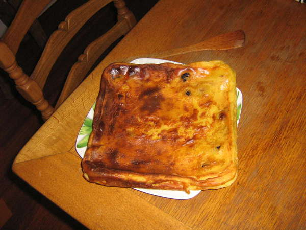

Far aux pruneaux de Loperc’hed
Ingredients
- 250g farine
- 150g sucre
- 4 oeufs
- 3/4 l lait
- pruneaux
- 2 gouttes de rhum (ou plus)
Préparation

Préchauffer le four à 180 degrés. mettre le plat dans le four avec un peu d’eau pour le préchauffer. Mettre les pruneaux a tremper dans une assiette avec du lait tiède et 2 gouttes de rhum. Faire bouillir le lait. Mélanger les œufs et le sucre. Ajouter progressivemnt la farine. Bien mélanger.

Verser progressivement le lait chaud sur la pâte. Bien remuer. Ajouter les pruneaux egouttés. Sortir le plat du four. Vider l’eau. Ajouter quelques morceaux de beurre dans le fond du plat. Mettre le melange dans le plat et placer au four pendant 1 heure environ à 180 degrés.
